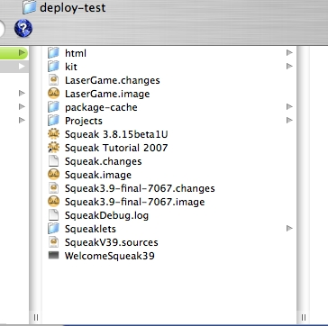
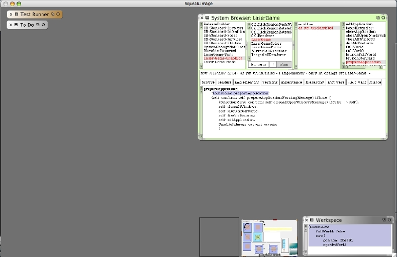

The contents of our Squeak development folder should contain at least the following files after the write-out of our LaserGame image.
You can see a new LaserGame.image and LaserGame.changes file set. Before we launch the first deployed images we need to be sure we still have a proper development environment. Re-launch Squeak. You should see the normal development environment with our browser open, a "normal" Squeak desktop background color, and most importantly, no Laser Game open. Here's a slightly scaled-down picture of my development environment re-launched.
